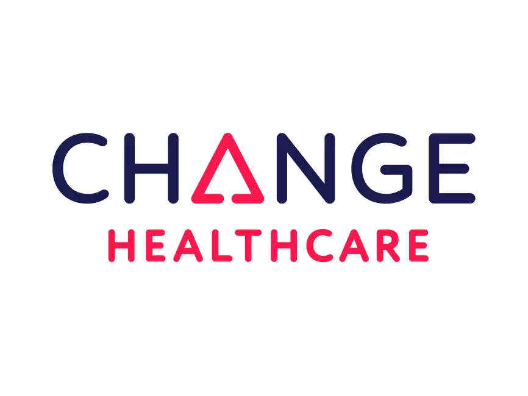
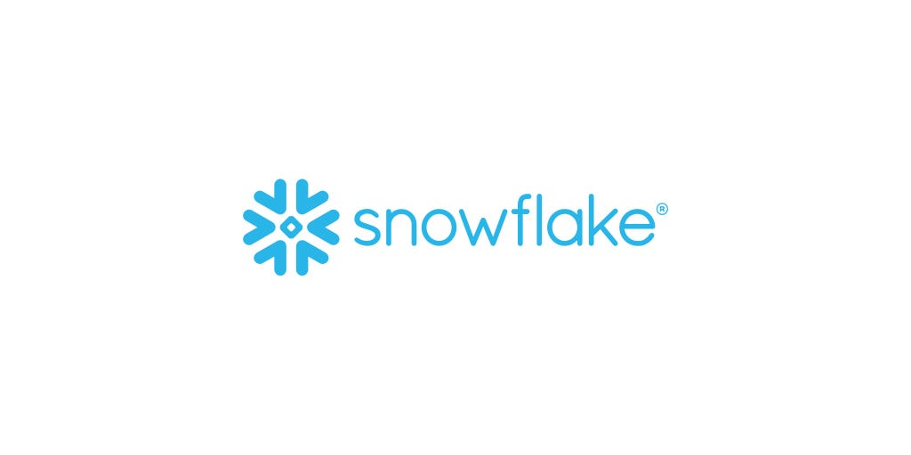
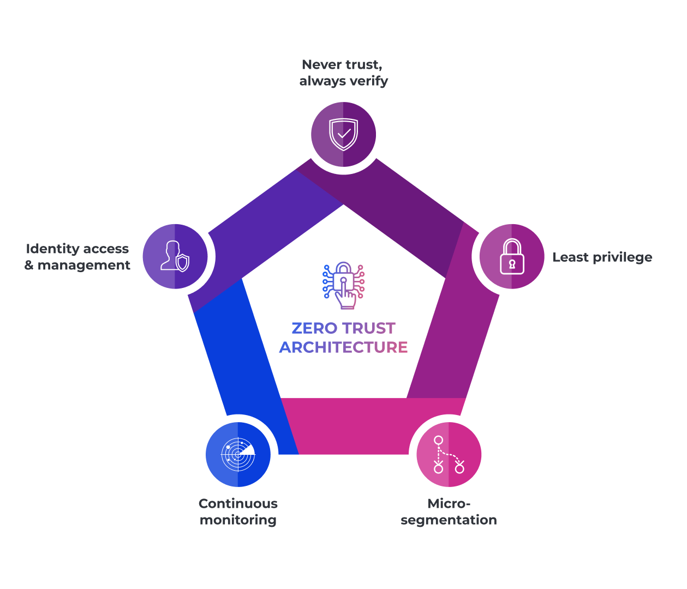

Cybersecurity has become one of the most critical issues of our time with our life becoming more integrated with tech everyday, with more data being created, attacks are growing more frequent and more disruptive each year. These attacks have affected hospitals to financial institutions to local governments, no sector has been spared of these threats. In 2024 and 2025, several incidents stood out for their scale and the impact they had on everyday life. This page will take a closer look at the main cyber attacks we've been experiencing, as well as the trends we are seeing this year.
| Attack Name | Date | ↓ Impact ↓ | Company |
|---|---|---|---|
| Change Healthcare Data Breach | Feb 2024 | In February 2024, Change Healthcare, a major provider of medical payment services in the U.S., was targeted by the BlackCat ransomware group. The attack disrupted claims processing across hospitals and pharmacies, delaying payments and patient services. The company reportedly paid millions to regain control of its systems, highlighting the serious risks ransomware poses to healthcare operations. |  |
| Snowflake Data Breach | May 2024 | In May 2024, attackers gained access to Snowflake, a widely used cloud data platform, by compromising customer credentials. This breach exposed sensitive information across more than a hundred organizations. The incident emphasized the importance of multi-factor authentication, strong credential management, and monitoring for unusual account activity in cloud environments. |  |
| UK MoD Data Breach | May 2024 | In May 2024, a contractor-operated payroll system for the UK Ministry of Defence was breached, exposing personal and financial data of current and former service members. The incident highlighted the risks associated with third-party vendors and supply-chain security, demonstrating how sensitive government information can be compromised even without a direct attack on core systems. |
↙ ↘
| 1 | 2 | 3 | 4 | 5 |
|---|---|---|---|---|
|  | ||||
| AI-driven malware adapts in real-time to avoid detection. | Zero Trust ensures verification for every request. | Quantum computing could break current encryption. | Ransomware-as-a-Service increases cyberattack frequency. | 5G and edge computing introduce new vulnerabilities. |